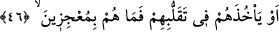
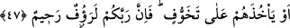

46. Yahut onlar dönüp dolaşırlarken Allah’ın kendilerini yakalamayacağından
emin mi oldular? Onlar (Allah’ı) âciz bırakacak değillerdir.
“Yahut onlar dönüp dolaşırlarken” yâni onlar, yeryüzünde yürürlerken, ticâret
yaparlarken ve dünyâ işleriyle uğraşırlarken, demektir. “Allah’ın kendilerini
yakalamayacağından emin mi oldular?”
Müftü Sa‘dî der ki: Önceki âyetteki: “bilemeyecekleri bir yerden azabın
gelmeyeceğinden emin mi oldular?” ifâdesiyle kasdedilen, uyku ve istirahat
halleridir. Bu, azabın mutlaka semâdan gelmesini gerektirmez. Bu âyette kasdedilen ise
azâbın onlara uyanıklık ve faaliyet hallerinde gelmesidir. Nitekim Allah Teâlâ: “Gece
yatarlarken yahut gündüz uyurlarken azabımız onlara geliverdi.” (el-A‘raf, 7/4)
buyurmuştur.
“Onlar (Allah’ı) âciz bırakacak değillerdir.” Kahhâr olan Allah’ın azabından
kurtulamazlar. Dolaşmayı ve gezmeyi planladıkları memleketlere kaçmak ve firar etmek
sûretiyle O’nun azabına karşı koyamazlar. Bir hadiste: “Allah zâlime mühlet verir. Onu
bir de yakaladı mı bırakmaz.”[153] buyrulmuştur. Yâni ona zaman tanır, ömrünü uzatır;
böylece onun zulmü çoğalır, sonra onu şiddetli bir şekilde yakalayıverir. Yakaladığında
da artık onu bırakmaz. Kimse de onu Allah’ın elinden kurtaramaz. Bu hadiste mazlum
için bir tesellî, elindeki mühlete aldanmaması için zâlime bir tehdid vardır.
Şeyh Sa‘dî (k.s.) der ki:
Ey ulu, büyük olan kimse! Halka ezâ ve cefâ eyleme
Çünkü cihan bir üslub ve kaide üzere kalmaz
Ey eksik akıllı bıldırcın, korkmaz mısın
Ki bir gün kaplanın seni telef etmesinden
47. Yoksa Allah’ın kendilerini yavaş yavaş tüketerek cezalandırmayacağından
(emin mi oldular)? Kuşkusuz Rabbin çok şefkatli, pek merhametlidir.
“Yoksa Allah’ın kendilerini yavaş yavaş tüketerek cezalandırmayacağından” emin
mi oldular? el-Kâmûs’ta der ki: “ bir şeyi eksiltti, demektir. Bu âyette de
aynı anlamdadır. Adamın biri, bir bedevî ile karşılaştı ve: “Ey falanca, dînin nasıl?”
diye sordu. O da: “, yâni onu azar azar noksanlaştırdım.” diye cevap verdi. Ebü’l-
Leys Tefsîri’nde böyle geçmektedir.
Yâni Allah onların nefislerini ve mallarını azar azar noksanlaştırarak helak eder, tek